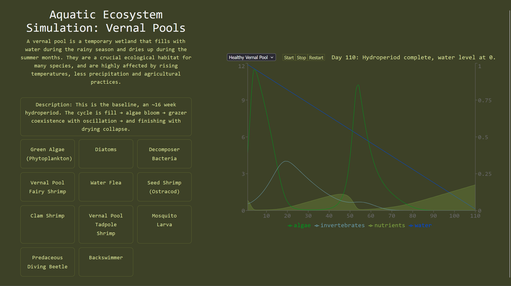

aquaSim | React / TypeScript / WebAssembly

An aquatic ecosystem simulation of vernal pools. In progress.
This project is a full stack web application with a decoupled frontend and backend. The frontend is built with React and TypeScript, and the backend is a Drupal 10 content management system with custom species and environmental scenarios. The simulation is built with WebAssembly and runs in the browser.
The intention of this project is to be a learning tool for myself and others to understand the vital importance of these transient and fragile ecosystems. The theoretical framework for the simulation models a simplified freshwater pond cycle with nutrients, algae, invertebrates, and decomposers. The mathematics draw from the Lotka-Volterra equations for predator-prey interactions, Monod kinetics for algae growth, and Holling type II kinetics for invertebrate growth. As vernal pools fill with winter rains, and then dry out during the summer months, each yearly cycle (or hydroperiod) is represented by a single simulation.
This project is a full stack web application with a decoupled frontend and backend. The frontend is built with React and TypeScript, and the backend is a Drupal 10 content management system with custom species and environmental scenarios. The simulation is built with WebAssembly and runs in the browser.
The intention of this project is to be a learning tool for myself and others to understand the vital importance of these transient and fragile ecosystems. The theoretical framework for the simulation models a simplified freshwater pond cycle with nutrients, algae, invertebrates, and decomposers. The mathematics draw from the Lotka-Volterra equations for predator-prey interactions, Monod kinetics for algae growth, and Holling type II kinetics for invertebrate growth. As vernal pools fill with winter rains, and then dry out during the summer months, each yearly cycle (or hydroperiod) is represented by a single simulation.